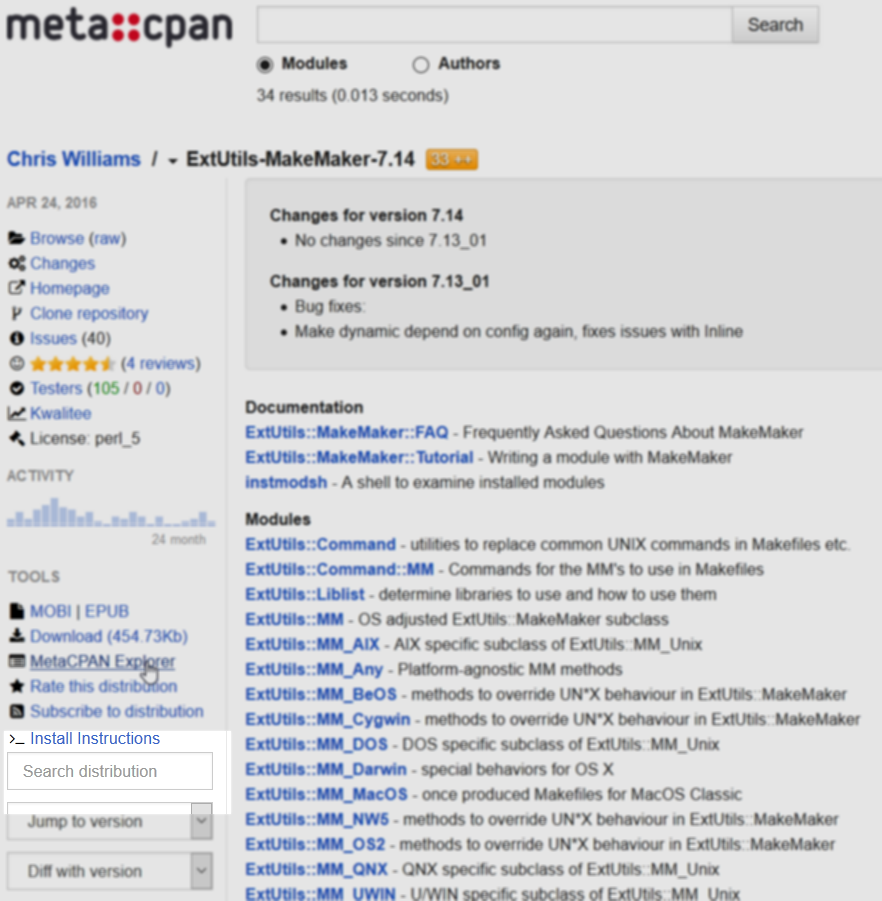
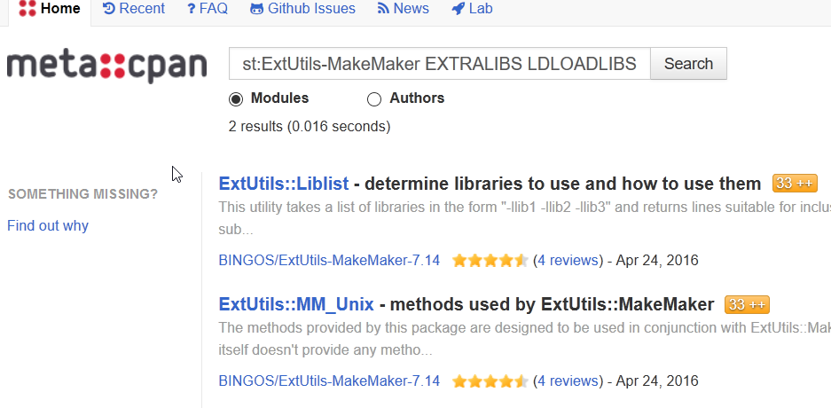

In order to build curie on Windows1, we need to build the various Perl dependencies. These Perl dependencies in turn require native libraries such as Gtk+ 3 and MuPDF. Using the MSYS2 package manager, we can install the native libraries and link against them.
The following steps show how to install the dependencies along with how I ended up debugging the build. I'm writing out this post in case the debugging steps are useful months later when I forget how or why I did things.
The following will be assuming 64-bit Windows (x86-64 architecture) throughout.
For those who just want to see the final code, go to the PR here.
Building locally
-
Install MSYS2. This is a straightforward install into the
C:\msys64directory. -
Start the "MinGW-w64 Win64 Shell" from the Start Menu. This shell sets up the proper environment variables needed to use 64-bit libraries for the MinGW64 system.
-
Use the pacman package manager to update the package database and install the build toolchain.
pacman -Syu # update # Install compiler and build configuration tools pacman -S --needed --noconfirm mingw-w64-x86_64-toolchain autoconf automake libtool make patch mingw-w64-x86_64-libtool
-
Install the native dependencies.
pacman -S --needed --noconfirm \ mingw-w64-x86_64-gobject-introspection \ mingw-w64-x86_64-cairo \ mingw-w64-x86_64-gtk3 \ mingw-w64-x86_64-expat \ mingw-w64-x86_64-openssl
-
Install Perl and cpanm
pacman -S --needed --noconfirm mingw-w64-x86_64-perl yes | cpan App::cpanminus
However, we ecounter a problem with this last command.
Configuring M/MI/MIYAGAWA/App-cpanminus-1.7040.tar.gz with Makefile.PL Checking if your kit is complete... Looks good Generating a dmake-style Makefile Writing Makefile for App::cpanminus Writing MYMETA.yml and MYMETA.json MIYAGAWA/App-cpanminus-1.7040.tar.gz C:\msys64\mingw64\bin\perl.exe Makefile.PL -- OK Running make for M/MI/MIYAGAWA/App-cpanminus-1.7040.tar.gz cp lib/App/cpanminus/fatscript.pm blib\lib\App\cpanminus\fatscript.pm cp lib/App/cpanminus.pm blib\lib\App\cpanminus.pm "C:\msys64\mingw64\bin\perl.exe" -MExtUtils::Command -e cp -- bin/cpanm blib\script\cpanm pl2bat.bat blib\script\cpanm 'pl2bat.bat' is not recognized as an internal or external command, operable program or batch file. dmake: Error code 129, while making 'blib\script\cpanm' dmake: 'blib\script\cpanm' removed. MIYAGAWA/App-cpanminus-1.7040.tar.gz dmake -- NOT OKThe important line here is
'pl2bat.bat' is not recognized as an internal or external command,
It tries to using
pl2bat.batto install thecpanmscript, but it is missing. Let's take a look:$ which pl2bat.bat which: no pl2bat.bat in (...)
OK, so it is not there. What about without the
.batextension?# Where is pl2bat? $ which pl2bat /mingw64/bin/pl2bat # What does the beginning of the file look like. $ head -1 $(which pl2bat) #!perl -w
OK, so it does exist and is a Perl script. We just need it be a Windows batch file.
- Note about
pl2bat -
The
pl2batcommand is a tool that is used on Windows in order to allow for running Perl scripts without having to specify that they must run under Perl. So instead of having to typeperl myscriptto run code in themyscriptfile, we can just typemyscriptand run it as if it was just another executable. This works by wrapping the original code and placing it into a Windows batch file that calls the Perl interpreter on the same file.
It turns out that MSYS2 has the Perl script
pl2batwhich does the conversion, but that file was not converted itself! To do that we find the path for thepl2batfile and runpl2baton it.pl2bat $(which pl2bat)
We can then install
cpanmas before and it works.yes | cpan App::cpanminus
- Note about
-
Install the Perl dependencies for curie itself by running the following in a copy of the
curierepository:cpanm --installdeps .This reads the
cpanfilewhich lists the Perl prerequisites for the project and installs everything needed to build, run, and test the code.But we hit an issue here when it attempts to install Gtk3 and in turn its dependency Glib.
$ cpanm -f Glib --> Working on Glib Fetching http://www.cpan.org/authors/id/X/XA/XAOC/Glib-1.321.tar.gz ... OK Configuring Glib-1.321 ... OK Building and testing Glib-1.321 ... ! Installing Glib failed. See C:\msys64\...\build.log for details. Retry with --force to force install it. FAIL
Let's take a closer look at what is happening with Glib by adding the
--verboseflag:$ cpanm --verbose Glib # [ redacted configuration output ] # [ redacted compilation output ] [ LD blib\arch\auto\Glib\Glib.dll ] Glib.o:Glib.c:(.text+0x156d): undefined reference to `__imp_glib_major_version' Glib.o:Glib.c:(.text+0x15a3): undefined reference to `__imp_glib_minor_version' Glib.o:Glib.c:(.text+0x15b1): undefined reference to `__imp_glib_micro_version' Glib.o:Glib.c:(.text+0x15e8): undefined reference to `__imp_glib_micro_version' Glib.o:Glib.c:(.text+0x1603): undefined reference to `__imp_glib_minor_version' Glib.o:Glib.c:(.text+0x160a): undefined reference to `__imp_glib_micro_version' GUtils.o:GUtils.c:(.text+0x573): undefined reference to `__imp_glib_micro_version' GUtils.o:GUtils.c:(.text+0x583): undefined reference to `__imp_glib_minor_version' GUtils.o:GUtils.c:(.text+0x593): undefined reference to `__imp_glib_major_version' GParamSpec.o:GParamSpec.c:(.text+0x2ee4): undefined reference to `__imp_g_param_spec_types' GParamSpec.o:GParamSpec.c:(.text+0x3032): undefined reference to `__imp_g_param_spec_types' GParamSpec.o:GParamSpec.c:(.text+0x3152): undefined reference to `__imp_g_param_spec_types' GParamSpec.o:GParamSpec.c:(.text+0x3292): undefined reference to `__imp_g_param_spec_types' GParamSpec.o:GParamSpec.c:(.text+0x3347): undefined reference to `__imp_g_param_spec_types' GParamSpec.o:GParamSpec.c:(.text+0x3422): more undefined references to `__imp_g_param_spec_types' follow C:\msys64\mingw64\lib\libgobject-2.0.a(libgobject_2_0_la-gclosure.o):(.text+0x222e): undefined reference to `ffi_prep_cif' C:\msys64\mingw64\lib\libgobject-2.0.a(libgobject_2_0_la-gclosure.o):(.text+0x224e): undefined reference to `ffi_call' C:\msys64\mingw64\lib\libgobject-2.0.a(libgobject_2_0_la-gclosure.o):(.text+0x2607): undefined reference to `ffi_prep_cif' C:\msys64\mingw64\lib\libgobject-2.0.a(libgobject_2_0_la-gclosure.o):(.text+0x262f): undefined reference to `ffi_call' C:\msys64\mingw64\lib\libgobject-2.0.a(libgobject_2_0_la-gclosure.o):(.rdata$.refptr.ffi_type_void[.refptr.ffi_type_void]+0x0): undefined reference to `ffi_type_void' C:\msys64\mingw64\lib\libgobject-2.0.a(libgobject_2_0_la-gclosure.o):(.rdata$.refptr.ffi_type_uint64[.refptr.ffi_type_uint64]+0x0): undefined reference to `ffi_type_uint64' C:\msys64\mingw64\lib\libgobject-2.0.a(libgobject_2_0_la-gclosure.o):(.rdata$.refptr.ffi_type_sint64[.refptr.ffi_type_sint64]+0x0): undefined reference to `ffi_type_sint64' C:\msys64\mingw64\lib\libgobject-2.0.a(libgobject_2_0_la-gclosure.o):(.rdata$.refptr.ffi_type_double[.refptr.ffi_type_double]+0x0): undefined reference to `ffi_type_double' C:\msys64\mingw64\lib\libgobject-2.0.a(libgobject_2_0_la-gclosure.o):(.rdata$.refptr.ffi_type_float[.refptr.ffi_type_float]+0x0): undefined reference to `ffi_type_float' C:\msys64\mingw64\lib\libgobject-2.0.a(libgobject_2_0_la-gclosure.o):(.rdata$.refptr.ffi_type_pointer[.refptr.ffi_type_pointer]+0x0): undefined reference to `ffi_type_pointer' C:\msys64\mingw64\lib\libgobject-2.0.a(libgobject_2_0_la-gclosure.o):(.rdata$.refptr.ffi_type_uint32[.refptr.ffi_type_uint32]+0x0): undefined reference to `ffi_type_uint32' C:\msys64\mingw64\lib\libgobject-2.0.a(libgobject_2_0_la-gclosure.o):(.rdata$.refptr.ffi_type_sint32[.refptr.ffi_type_sint32]+0x0): undefined reference to `ffi_type_sint32' C:\msys64\mingw64\lib\libglib-2.0.a(libglib_2_0_la-gmain.o):(.text+0x25c8): undefined reference to `__imp_timeGetTime' C:\msys64\mingw64\lib\libglib-2.0.a(libglib_2_0_la-gmain.o):(.text+0x2608): undefined reference to `__imp_timeGetTime' C:\msys64\mingw64\lib\libglib-2.0.a(libglib_2_0_la-gregex.o):(.text+0x1a6): undefined reference to `pcre_get_stringtable_entries' C:\msys64\mingw64\lib\libglib-2.0.a(libglib_2_0_la-gregex.o):(.text+0x231): undefined reference to `pcre_get_stringnumber' C:\msys64\mingw64\lib\libglib-2.0.a(libglib_2_0_la-gregex.o):(.text+0xa36): undefined reference to `pcre_exec' C:\msys64\mingw64\lib\libglib-2.0.a(libglib_2_0_la-gregex.o):(.text+0x132f): undefined reference to `pcre_compile2' C:\msys64\mingw64\lib\libglib-2.0.a(libglib_2_0_la-gregex.o):(.text+0x134d): undefined reference to `pcre_fullinfo' C:\msys64\mingw64\lib\libglib-2.0.a(libglib_2_0_la-gregex.o):(.text+0x13c9): undefined reference to `pcre_fullinfo' C:\msys64\mingw64\lib\libglib-2.0.a(libglib_2_0_la-gregex.o):(.text+0x1b44): undefined reference to `pcre_fullinfo' C:\msys64\mingw64\lib\libglib-2.0.a(libglib_2_0_la-gregex.o):(.text+0x1d9c): undefined reference to `pcre_study' C:\msys64\mingw64\lib\libglib-2.0.a(libglib_2_0_la-gregex.o):(.text+0x1e9d): undefined reference to `pcre_config' C:\msys64\mingw64\lib\libglib-2.0.a(libglib_2_0_la-gregex.o):(.text+0x1eb4): undefined reference to `pcre_config' C:\msys64\mingw64\lib\libglib-2.0.a(libglib_2_0_la-gregex.o):(.text+0x1f98): undefined reference to `pcre_fullinfo' C:\msys64\mingw64\lib\libglib-2.0.a(libglib_2_0_la-gregex.o):(.text+0x1fc8): undefined reference to `pcre_fullinfo' C:\msys64\mingw64\lib\libglib-2.0.a(libglib_2_0_la-gregex.o):(.text+0x1ff8): undefined reference to `pcre_fullinfo' C:\msys64\mingw64\lib\libglib-2.0.a(libglib_2_0_la-gregex.o):(.text+0x2028): undefined reference to `pcre_fullinfo
OK, that's a lot of errors. Seems that the linker phase (
ld) has failed to find several function names in thelibglib-2.0.aandlibgobject-2.0.alibrary files.- Note about library files on Windows
-
We see that that library files above both end in the
.aextension (for archive). This indicates that this is a static library which means symbols such as function names get resolved at linking time through static linking.We can also resolve symbols at runtime through dynamic linking. These files have the extension
.dllon Windows.
Let's take a look at what we expect the linker flags to be for
libglibandlibgobjectby using thepkg-configcommand:# Find the name of the glib and gobject library packages $ pkg-config --list-all | grep glib\|gobject glib-2.0 GLib - C Utility Library gobject-2.0 GObject - GLib Type, Object, Parameter and Signal Library # Get the linker flags $ pkg-config --libs glib-2.0 gobject-2.0 -LC:/msys64/mingw64/lib -lgobject-2.0 -lglib-2.0 -lintl
OK, that looks reasonable. But we see the above errors refer to functions that are prefixed with
ffi_andpcre_. The convention for C libraries is that the prefix referse to the libraries that the functions came from. But we don't see any flags for those libraries (-lffi -lpcre). So when linker attempts static linking against the.afiles, it does not know that the other libraries are needed.We can try to get the linker flags for static linking by adding the
--staticflag topkg-config# Get the static linker flags $ pkg-config --static --libs glib-2.0 gobject-2.0 -LC:/msys64/mingw64/lib -LC:/msys64/mingw64/lib/../lib -LC:/msys64/mingw64/lib -lgobject-2.0 -lffi -lglib-2.0 -lintl -pthread -lws2_32 -lole32 -lwinmm -lshlwapi -lpcre -lintl -lpcre
Ah, there we go! Let's compare this to what the Glib module uses when linking:
# Drop into the Glib installation directory $ cpanm --look Glib # Generate the Makefile Glib-1.321 $ perl Makefile.PL verbose # [ redacted output ] Potential libraries are '-LC:/msys64/mingw64/lib -lgobject-2.0 -lglib-2.0 -lintl -lgthread-2.0 -pthread -lmoldname -lkernel32 -luser32 -lgdi32 -lwinspool -lcomdlg32 -ladvapi32 -lshell32 -lole32 -loleaut32 -lnetapi32 -luuid -lws2_32 -lmpr -lwinmm -lversion -lodbc32 -lodbccp32 -lcomctl32': # [ redacted output ] Result: "C:\msys64\mingw64\lib\libgobject-2.0.a" "C:\msys64\mingw64\lib\libglib-2.0.a" "C:\msys64\mingw64\lib\libintl.a" "C:\msys64\mingw64\lib\libgthread-2.0.a" Generating a dmake-style Makefile Writing Makefile for Glib Writing MYMETA.yml and MYMETA.json
OK, wait, what's this? We get the list of dynamic linker flags where it says "Potential libraries", but when it says "Result:", a couple of those flags become paths to the corresponding
.afiles. Let's rundmakewith theNOECHOflag to see what is going on:Glib-1.321 $ dmake NOECHO='' # [ redacted output ] [ LD blib\arch\auto\Glib\Glib.dll ] g++ Glib.def -o blib\arch\auto\Glib\Glib.dll -mdll -s -L"C:\msys64\mingw64\lib\perl5\core_perl\CORE" -L"C:\msys64\mingw64\lib" Glib.o GError.o GUtils.o GLog.o GType.o GBoxed.o GObject.o GValue.o GClosure.o GSignal.o GMainLoop.o GIOChannel.o GParamSpec.o GKeyFile.o GOption.o GBookmarkFile.o GVariant.o gperl-gtypes.o "C:\msys64\mingw64\lib\perl5\core_perl\CORE\libperl522.a" "C:\msys64\mingw64\lib\libgobject-2.0.a" "C:\msys64\mingw64\lib\libglib-2.0.a" "C:\msys64\mingw64\lib\libintl.a" "C:\msys64\mingw64\lib\libgthread-2.0.a" -Wl,--enable-auto-image-base Glib.o:Glib.c:(.text+0x156d): undefined reference to `__imp_glib_major_version' Glib.o:Glib.c:(.text+0x15a3): undefined reference to `__imp_glib_minor_version' Glib.o:Glib.c:(.text+0x15b1): undefined reference to `__imp_glib_micro_version' # [ rest of the linker errors as before ]
OK, so here we see that all the dynamic linker flags are using the full paths to the
.afiles. Let's take a look at howMakefile.PLpasses on this information to theMakefileGlib-1.321 $ grep libgobject-2.0.a Makefile EXTRALIBS = "C:\msys64\mingw64\lib\libgobject-2.0.a" "C:\msys64\mingw64\lib\libglib-2.0.a" "C:\msys64\mingw64\lib\libintl.a" "C:\msys64\mingw64\lib\libgthread-2.0.a" LDLOADLIBS = "C:\msys64\mingw64\lib\libgobject-2.0.a" "C:\msys64\mingw64\lib\libglib-2.0.a" "C:\msys64\mingw64\lib\libintl.a" "C:\msys64\mingw64\lib\libgthread-2.0.a" # EXTRALIBS => q["C:\msys64\mingw64\lib\libgobject-2.0.a" "C:\msys64\mingw64\lib\libglib-2.0.a" "C:\msys64\mingw64\lib\libintl.a" "C:\msys64\mingw64\lib\libgthread-2.0.a"] # LDLOADLIBS => q["C:\msys64\mingw64\lib\libgobject-2.0.a" "C:\msys64\mingw64\lib\libglib-2.0.a" "C:\msys64\mingw64\lib\libintl.a" "C:\msys64\mingw64\lib\libgthread-2.0.a"]
]So it appears that
ExtUtils::MakeMakeris setting theEXTRALIBSandLDLOADLIBSvariables. Let's try setting them ourselves to the output ofpkg-config:Glib-1.321 $ export GLIB_PKG_CONFIG="$(pkg-config --libs gobject-2.0 glib-2.0)" Glib-1.321 $ dmake NOECHO='' LDLOADLIBS="$GLIB_PKG_CONFIG" EXTRALIBS="$GLIB_PKG_CONFIG"
It built successfully! This means that there is a problem with using the full path to the
.afiles. We need to see whyEXTRALIBSandLDLOADLIBSare being set the way they are.Let's search the distribution for documentation about these variables by going to the distribution's page on MetaCPAN and typing the query
EXTRALIBS LDLOADLIBSin the search box:Screenshot of the ExtUtils-MakeMaker page highlighting the Search Distribution field  Looking at the results, we see ExtUtils::Liblist and ExtUtils::MM_Unix.
Screenshot of the results of the query for LIB Makefile variables  The ExtUtils::Liblist looks promising. In version 7.14 of the documentation, there's a section about the Win32 behaviour:
An entry of the form
-lfoospecifies the libraryfoo, which may be spelled differently depending on what kind of compiler you are using. If you are using GCC, it gets translated tolibfoo.a, but for other win32 compilers, it becomesfoo.lib.So the translation to full paths is a part of the design. Reading further, we see
An entry that matches
/:nosearch/idisables all searching for the libraries specified after it.So if we but
:nosearchin the LIBS parameter of the function that generates theMakefile, (i.e.,WriteMakefile). Let's try that$ cpanm --look Glib Glib-1.321 $ export GLIB_PKG_CONFIG="$(pkg-config --libs gobject-2.0 glib-2.0)" Glib-1.321 $ perl Makefile.PL LIBS=":nosearch $GLIB_PKG_CONFIG" verbose # [ remove extra output ] Potential libraries are ':nosearch -LC:/msys64/mingw64/lib -lgobject-2.0 -lglib-2.0 -lintl -lmoldname -lkernel32 -luser32 -lgdi32 -lwinspool -lcomdlg32 -ladvapi32 -lshell32 -lole32 -loleaut32 -lnetapi32 -luuid -lws2_32 -lmpr -lwinmm -lversion -lodbc32 -lodbccp32 -lcomctl32': Result: "-LC:\msys64\mingw64\lib" "-lgobject-2.0" "-lglib-2.0" "-lintl" "-lmoldname" "-lkernel32" "-luser32" "-lgdi32" "-lwinspool" "-lcomdlg32" "-ladvapi32" "-lshell32" "-lole32" "-loleaut32" "-lnetapi32" "-luuid" "-lws2_32" "-lmpr" "-lwinmm" "-lversion" "-lodbc32" "-lodbccp32" "-lcomctl32" # [ remove extra output ] Glib-1.321 $ dmake NOECHO=''
Hey, it's working!
So now we know that all we need is to put
:nosearchin theLIBSparameter and it will build. But that's still problematic, because if I try to install any module, I will have to open it up to find out what it is passing in to LIBS and copy that into the command line for the configuration step.I did that anyway and installed Glib, Cairo, Glib::Object::Introspection, Cairo::GObject, and XML::Parser by manually setting the flags for
LIBS.I then popped into the
#toolchainIRC channel on theirc.perl.orgnetwork to share what I had learned and ask if there was another way forward. After a quick convo withmst++, he came back with a one-liner that wrapped theWriteMakefilefunction and inserted:nosearchinto theLIBSparameter:perl -Maliased=ExtUtils::MakeMaker,EUMM \ -e 'my $i = EUMM->can("import"); no warnings "redefine"; *ExtUtils::MakeMaker::import = sub { &$i; my $targ = caller; my $wm = $targ->can("WriteMakefile"); *{"${targ}::WriteMakefile"} = sub { my %args = @_; $args{LIBS} =~ s/^/:nosearch /; $wm->(%args) }; }; do "Makefile.PL" or die "Hack failed: $@"'Yes, that is one line and it does work!
-
Rejoice! The curie code runs!
Screenshot of the curie GUI with a test PDF open
{kind=link}
{kind=link}
{kind=link}
At this point, I was quite happy. Now I needed to reproduce these steps so that they can be used to test every set of changes to the codebase. I could do this with the Appveyor CI service for Windows. Little did I know that there was a lot more work coming my way.
Building on Appveyor
In this section, it is easier to show parts of the Appveyor configuration and explain what each part is for rather than show how I debugged the configuration — mainly because it took me a little over 50 builds on Appveyor to figure out all the quirks of the system. Many of them were missteps on my part, but is hard to figure out where things go wrong on a remote system if you can only run commands every 20 minutes!
-
After enabling the curie project on the Appveyor website, we need an
appveyor.ymlconfiguration file with the commands needed for building the project.I first search GitHub for other projects that used Appveyor with MSYS2 and came across the
appveyor.ymlconfiguration file for libosmscout. It has support for compiling under both the MinGW64 GCC compiler and Microsoft's MSVC2015 compiler. Right now, I just need the bits for MSYS2 MinGW64:version: 1.0.{build} environment: matrix: - COMPILER: msys2 PLATFORM: x64 MSYS2_ARCH: x86_64 MSYS2_DIR: msys64 MSYSTEM: MINGW64 BIT: 64 install: # running under CI - set CI_TESTING=1 - '%APPVEYOR_BUILD_FOLDER%\dev\ci\appveyor\install.bat' - 'echo End intall at: & time /t' build_script: - 'echo Nothing to build' test_script: - '%APPVEYOR_BUILD_FOLDER%\dev\ci\appveyor\test.bat'The important part here is the line
- '%APPVEYOR_BUILD_FOLDER%\dev\ci\appveyor\install.bat'
which tells Appveyor to run a batch file with more instructions. The contents of this are
@echo off cd %APPVEYOR_BUILD_FOLDER% echo Compiler: %COMPILER% echo Architecture: %MSYS2_ARCH% echo Platform: %PLATFORM% echo MSYS2 directory: %MSYS2_DIR% echo MSYS2 system: %MSYSTEM% echo Bits: %BIT% REM Create a writeable TMPDIR mkdir %APPVEYOR_BUILD_FOLDER%\tmp set TMPDIR=%APPVEYOR_BUILD_FOLDER%\tmp IF %COMPILER%==msys2 ( @echo on SET "PATH=C:\%MSYS2_DIR%\%MSYSTEM%\bin;C:\%MSYS2_DIR%\usr\bin;%PATH%" bash -lc "pacman -S --needed --noconfirm pacman-mirrors" bash -lc "pacman -S --needed --noconfirm git" REM Update bash -lc "pacman -Syu --noconfirm" REM build tools bash -lc "pacman -S --needed --noconfirm mingw-w64-x86_64-toolchain autoconf automake libtool make patch mingw-w64-x86_64-libtool" REM Set up perl bash -lc "pacman -S --needed --noconfirm mingw-w64-x86_64-perl" bash -lc "pl2bat $(which pl2bat)" bash -lc "yes | cpan App::cpanminus" bash -lc "cpanm --notest ExtUtils::MakeMaker" REM Native deps bash -lc "pacman -S --needed --noconfirm mingw-w64-x86_64-gobject-introspection mingw-w64-x86_64-cairo mingw-w64-x86_64-gtk3 mingw-w64-x86_64-expat mingw-w64-x86_64-openssl" REM There is not a corresponding cc for the mingw64 gcc. So we copy it in place. bash -lc "cp -pv /mingw64/bin/gcc /mingw64/bin/cc" REM Install via cpanfile bash -lc "cd $APPVEYOR_BUILD_FOLDER; . $APPVEYOR_BUILD_FOLDER/dev/ci/appveyor/EUMMnosearch.sh; export MAKEFLAGS='-j4 -P4'; cpanm --notest --installdeps ." )
There is a lot here, but much of it is the same as discussed in the local installation. Let's talk about what is new.
-
Let's start with the part that installs the dependencies:
cd $APPVEYOR_BUILD_FOLDER . $APPVEYOR_BUILD_FOLDER/dev/ci/appveyor/EUMMnosearch.sh export MAKEFLAGS='-j4 -P4' cpanm --notest --installdeps .
First, we need to be in the directory for the project we want to build (stored in the
$APPVEYOR_BUILD_FOLDERenvironment variable).Then we need to set a couple settings so that we can build with the
:nosearchsetting from before. We do this by sourcing theEUMMnosearch.shshell script. -
The
EUMMnosearch.shscript loads that one-liner before by turning that code into a Perl module that is loaded every time that Perl is run. This can be accomplished by setting thePERL5OPTenvironment variable:BUILD_DIR=`(cd $APPVEYOR_BUILD_FOLDER && pwd)` export PERL5OPT="-I$BUILD_DIR/dev/ci/appveyor -MEUMMnosearch" echo PERL5OPT=$PERL5OPT;
This Perl module is only run when the script being run is the configuration step of
ExtUtils::MakeMaker:package EUMMnosearch; package main; # only run when we call the Makefile.PL script if( $0 eq "Makefile.PL" ) { require ExtUtils::MakeMaker; my $i = ExtUtils::MakeMaker->can("import"); no warnings "redefine"; *ExtUtils::MakeMaker::import = sub { &$i; my $targ = "main"; my $wm = $targ->can("WriteMakefile"); *{"${targ}::WriteMakefile"} = sub { my %args = @_; # Only apply :nosearch after lib linker directory # for entire mingw64 system. This way XS modules # that depend on other XS modules can compile # statically using .a files. $args{LIBS} =~ s,^(.*?)(\Q-LC:/msys64/mingw64/lib\E\s),$1 :nosearch $2,; # Special case for expat (XML::Parser::Expat) because # it does not use either of # # - -L<libpath> # - pkg-config --libs expat $args{LIBS} =~ s,(\Q-lexpat\E),:nosearch $1,; print "LIBS: $args{LIBS}\n"; $wm->(%args); }; }; do "Makefile.PL" or die "Hack failed: $@"; # we can exit now that we are done exit 0; } 1;
There are a couple changes to the function that overrides
WriteMakefile.First, we no longer stick
:nosearchin front of all flags inLIBS. Instead, we only stick it before we set the linker search path to theC:/msys64/mingw64/libdirectory. That way if there are some non-system libraries that need to be compiled statically, they can still be compiled statically. This happens in the case of Cairo::GObject where the code needs to be linked against the compiled Perl code (called XS) for the Cairo and GObject libraries so that it can access some helper functions provided in those.afiles. The rest of the linker flags need to be compiled dynamically so we apply:nosearchto only the reset.Second, we insert a special case so that we can build XML::Parser::Expat. Since the
LIBSparameter is just set to"-lexpat"in that module, there is no-LC:/msys64/mingw64/libflag that we can use to insert:nosearch. So we insert it just before to setLIBSto":nosearch -lexpat"instead. -
This all would work on a clean install of Windows with only MSYS2 installed. However, Appveyor is not quite that.
I came across two more build errors that had nothing to do with MSYS2:
First, I had tried to install Net::SSLeay module which depends on the
libopenssllibrary. When I tried to install it, I got errors about missing symbols. Everything else was linking properly, so I didn't get why it would not link. I added a line to show me the libraries that the build was using forlibopenssl.$ cpanm --verbose --configure-args verbose Net::SSLeay Configuring Net-SSLeay-1.74 ... WARNING: can't open config file: /usr/local/ssl/openssl.cnf *** Found OpenSSL-1.0.2e installed in C:OpenSSL-Win32 *** Be sure to use the same compiler and options to compile your OpenSSL, perl, and Net::SSLeay. Mixing and matching compilers is not supported.It's looking for the SSL library in
C:OpenSSL-Win32. That's not a MinGW64 path! I looked around in the Net::SSLeay code and saw that there wasREADME.Win32file which says2. If your OpenSSL is installed in an unusual place, you can tell Net-SSLeay where to find it with the OPENSSL_PREFIX environment variable: set OPENSSL_PREFIX=c:OpenSSL-1.0.1c perl Makefile.PL make .....
In our case, we can use
export OPENSSL_PREFIX="/c/msys64/mingw64"
and Net::SSLeay builds properly.
-
Another issue that I hit was when I tried to install the
Alien::MuPDFdependency. This is a module that I wrote that downloads and builds the MuPDF library. I was getting a very odd error from the linker in this case:$ cpanm --verbose Alien::MuPDF # [ remove extra build output ] CC build/release/platform/x11/pdfapp.o windres platform/x11/win_res.rc build/release/platform/x11/win_res.o LINK build/release/mupdf build/release/platform/x11/win_main.o:win_main.c:(.text+0x2d79): undefined reference to `fz_argv_from_wargv' build/release/platform/x11/win_main.o:win_main.c:(.text+0x2d79): relocation truncated to fit: R_X86_64_PC32 against undefined symbol `fz_argv_from_wargv' build/release/platform/x11/win_main.o:win_main.c:(.text+0x3174): undefined reference to `fz_free_argv' build/release/platform/x11/win_main.o:win_main.c:(.text+0x3174): relocation truncated to fit: R_X86_64_PC32 against undefined symbol `fz_free_argv' collect2: error: ld returned 1 exit status Makefile:303: recipe for target 'build/release/mupdf' failed make: *** [build/release/mupdf] Error 1 External command (make HAVE_GLFW=no) failed! Error: 512 at ./Build line 58. Failed Build not completed at ./Build line 58. ! Installing Alien::MuPDF failed. See C:\msys64\home\appveyor\.cpanm\work\1462215039.2780\build.log for details. Retry with --force to force install it. Searching Modern::Perl (0) on cpanmetadb ... FAILThe
fz_prefix is used for functions in the MuPDF library (also known aslibfitz). This time there are undefined references to files within the same project! Very curious!Since I was already suspicious that I could not trust the Appveyor environment, I guessed that this might have to do with differences between the compiler and the linker used.
To debug this, I tried to build the MuPDF library locally and noticed that the C compiler used is
cc. On properly set up systems,ccis usually an alias for a specific C compiler such asgcc. To check this, I ran the following on Appveyor:# Information about the toolchain $ which -a cc; cc -v /usr/bin/cc /bin/cc /usr/bin/cc Using built-in specs. COLLECT_GCC=cc COLLECT_LTO_WRAPPER=/usr/lib/gcc/x86_64-pc-msys/4.9.2/lto-wrapper.exe Target: x86_64-pc-msys Configured with: /msys_scripts/gcc/src/gcc-4.9.2/configure --build=x86_64-pc-msys --prefix=/usr --libexecdir=/usr/lib --enable-bootstrap --enable-shared --enable-shared-libgcc --enable-static --enable-version-specific-runtime-libs --with-arch=x86-64 --disable-multilib --with-tune=generic --enable-__cxa_atexit --with-dwarf2 --enable-languages=c,c++,fortran,lto --enable-graphite --enable-threads=posix --enable-libatomic --enable-libgomp --disable-libitm --enable-libquadmath --enable-libquadmath-support --enable-libssp --disable-win32-registry --disable-symvers --with-gnu-ld --with-gnu-as --disable-isl-version-check --enable-checking=release --without-libiconv-prefix --without-libintl-prefix --with-system-zlib Thread model: posix gcc version 4.9.2 (GCC) $ which -a gcc; gcc -v /mingw64/bin/gcc /usr/bin/gcc /bin/gcc /MINGW64/bin/gcc /usr/bin/gcc Using built-in specs. COLLECT_GCC=C:\msys64\mingw64\bin\gcc.exe COLLECT_LTO_WRAPPER=C:/msys64/mingw64/bin/../lib/gcc/x86_64-w64-mingw32/5.3.0/lto-wrapper.exe Target: x86_64-w64-mingw32 Configured with: ../gcc-5.3.0/configure --prefix=/mingw64 --with-local-prefix=/mingw64/local --build=x86_64-w64-mingw32 --host=x86_64-w64-mingw32 --target=x86_64-w64-mingw32 --with-native-system-header-dir=/mingw64/x86_64-w64-mingw32/include --libexecdir=/mingw64/lib --with-gxx-include-dir=/mingw64/include/c++/5.3.0 --enable-bootstrap --with-arch=x86-64 --with-tune=generic --enable-languages=c,lto,c++,objc,obj-c++,fortran,ada --enable-shared --enable-static --enable-libatomic --enable-threads=posix --enable-graphite --enable-fully-dynamic-string --enable-libstdcxx-time=yes --disable-libstdcxx-pch --disable-libstdcxx-debug --enable-version-specific-runtime-libs --disable-isl-version-check --enable-lto --enable-libgomp --disable-multilib --enable-checking=release --disable-rpath --disable-win32-registry --disable-nls --disable-werror --disable-symvers --with-libiconv --with-system-zlib --with-gmp=/mingw64 --with-mpfr=/mingw64 --with-mpc=/mingw64 --with-isl=/mingw64 --with-pkgversion='Rev1, Built by MSYS2 project' --with-bugurl=http://sourceforge.net/projects/msys2 --with-gnu-as --with-gnu-ld Thread model: posix gcc version 5.3.0 (Rev1, Built by MSYS2 project) $ which -a ld; ld -V /mingw64/bin/ld /usr/bin/ld /bin/ld /MINGW64/bin/ld /usr/bin/ld GNU ld (GNU Binutils) 2.25.1 Supported emulations: i386pep i386peHere we see that both
ldandgccare found under the/mingw64/bin, butccis found elsewhere and is a different version altogether. The fix for this is simple, just copygcctocccp -pv /mingw64/bin/gcc /mingw64/bin/cc
and then Alien::MuPDF compiles properly.
-
Write a post documenting your travails.Happily use Appveyor to test all your code on Windows.
The full pull request for this Appveyor configuration is available here.
Portability is important to writing robust software and eventually curie will have an installer of Windows, so it is best to address any issues early through continuous integration. ↩